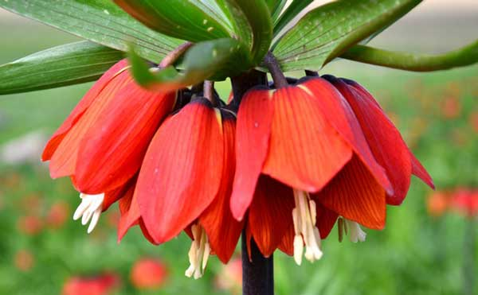
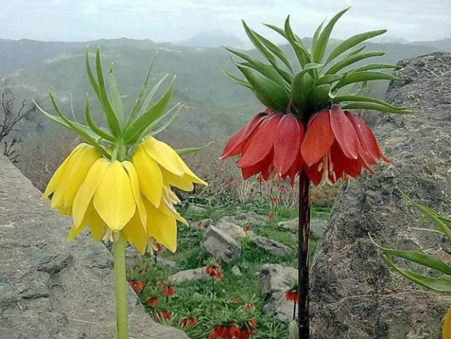

Hüznün Sembolü Bilinen en eski süs bitkisi olan Ters Lale, soğanlı bitkiler familyasındandır.Birçok din ve kültür için hüznün sembolü kabul edilmiş, efsanelere konu olmuştur. 19. yüzyılın sonlarına kadar Osmanlı topraklarına has bir çiçek olarak kalmıştır. Ters lale, Anadolu coğrafyasına ait endemik bir türdür. Efsanelerde Ters Lale Hristiyan rivayetlerine göre; Hz.İsa’nın çarmıha gerilişine şahit olan Hz. Meryem’in gözyaşlarının düştüğü yerde Ters Lale yetişmeye başlamıştır. Müslüman söylencelerine göre; Hz. Hasan ve Hüseyin’in Kerbela’da katledilişlerinden dolayı ve başka bir efsaneye göre ise Ferhat’la Şirin adlı aşık bir çiftinm birbirlerine kavuşamaması nedeniyle Ters Lale’nin boynu bükük, rengi kırmızıdır. Ters Lale, Anadolu topraklarının gördüğü büyük acıları efsaneleriyle özetlemektedir.
 